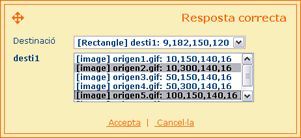

| respostes PREGUNTA D'ARROSSEGAR |
|
Com funciona? Per indicar les totes les respostes correctes de la pregunta s'ha de fer servir el control de respostes. Així, aquesta llista de respostes tindrà tantes línies com combinacions de respostes hagi. Per afegir, modificar o eliminar combinacions de respostes correctes es poden fer servir els botons que apareixen sota aquesta llista. La pantalla que es carrega en aquest moment permet editar una combinació vàlida de respostes. Els paràmetres que es poden configurar per cada combinació de respostes són els següents:
Per tant, serà necessari crear tantes entrades a la llista de respostes com possibles combinacions de respostes hagin. En cas que només hagi una resposta correcta, és a dir, només es puguin col·locar els objectes d'una única forma, aquesta llista només contindrà una línia. A més, per cada conjunt de respostes serà necessari indicar tots els objectes (un o més) que es poden arrossegar dins de cada zona de destí. |
|
Exemple A continuació es mostra un exemple de com afegir una resposta correcta. En concret, l'exemple mostra com la zona de destí rectangular amb identificador 'desti1' ha de contenir els objectes arrossegables 'origen2.gif' i 'origen5.gif'.  |